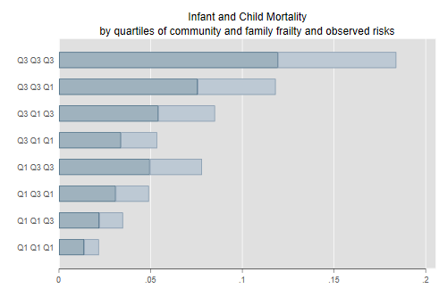
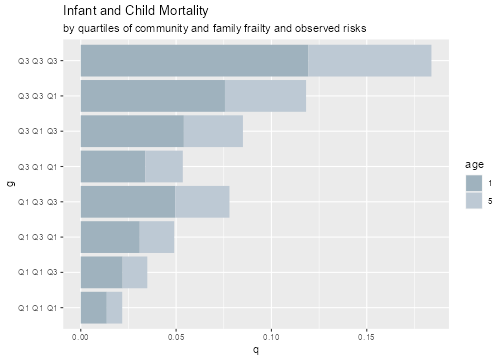

<h2 id="infant-and-child-mortality-in-kenya">Infant and Child Mortality
in Kenya</h2>
<p>An important application of Poisson models is to multilevel survival
analysis via the connection with piecewise exponential models. I
illustrate this approach with an analysis of infant and child mortality
in Kenya using DHS data, with an abridged version in my encyclopedia
article (Rodríguez, 2015) and full details in my chapter in the
<em>Handbook of Multilevel Analysis</em> (Rodríguez, 2008). You’ll find
the references with abstracts <a href="/research">here</a>.</p>
<p>I fill focus now on the calculation of predicted probabilities after
fitting the model. I start by storing the estimates of the fixed effects
and computing the baseline cumulative hazard up to ages 1 and 5. I also
store the first and third quartiles of the linear predictor and the
estimated standard deviations of the community and family effects. <span
class="stata">Calculations are best done using Mata.</span></p>

{% include srtabs.html %}

<pre class='stata'>. clear

. mata:
───────────────────────────────────────────────── mata (type end to exit) ──────
:   b = (-4.588, -1.642, -1.998, -2.822, -3.632, 0.087, 0.173, -0.047, 
>     0.003, 0.003, 0.036, -0.068, -0.007, 0.040)

:   logh0 = b[1] :+ (0, b[2..5])

:   h0 = exp(logh0)

:   w = (1,5,6,12,36)

:   H0 = runningsum(h0:*w)[(3,5)]

:   xb = (0.15, 0.63) // quartiles

:   sigma = (0.613, 0.680)

: end
────────────────────────────────────────────────────────────────────────────────
</pre>
<pre class='r'>> b &lt;- c(-4.588, -1.642, -1.998, -2.822, -3.632, 0.087, 0.173, -0.047, 
+   0.003, 0.003, 0.036, -0.068, -0.007, 0.040)
> logh0 &lt;- b[1] + c(0, b[2:5])
> h0 &lt;- exp(logh0)
> w &lt;- c(1,5,6,12,36)
> H0 &lt;- cumsum(h0 * w)[c(3,5)]
> xb &lt;- c(0.15, 0.63) # quartiles
> sigma &lt;- c(0.613, 0.680)
</pre>
<p>The conditional or <em>subject-specific probabilities</em> of dying
by ages 1 and 5 at the first and third quartiles of observed and
unobserved risks can be calculated as shown below. To simplify
repetitive calculations I wrote a function that calculates these
probabilities given the baseline hazard, the linear predictor, the
z-scores for unobserved family and community frailty, and the two
standard deviations.</p>
<pre class='stata'>. capture mata mata drop kcp()

. mata:
───────────────────────────────────────────────── mata (type end to exit) ──────
: real vector kcp(H0, xb, zf, zc, sigma) {
>   S = exp(-H0 :* exp(xb + zf*sigma[1] + zc*sigma[2]))
>   return(1 :- S)
> }

: M = J(8, 2, .)

: k = 1

: q = invnormal(.75)

: for(zc = 1; zc >= -1; zc = zc - 2) {
>   for(zf = 1; zf >= -1; zf = zf - 2) {
>     for(i = 2; i >=1; i--) {
>       M[k++, ] = kcp(H0, xb[i], q*zf, q*zc, sigma)
>     }
>   }
> }

: round(M, 0.001)
          1      2
    ┌───────────────┐
  1 │  .119   .184  │
  2 │  .076   .118  │
  3 │  .054   .085  │
  4 │  .034   .054  │
  5 │   .05   .078  │
  6 │  .031   .049  │
  7 │  .022   .035  │
  8 │  .014   .022  │
    └───────────────┘

: end
────────────────────────────────────────────────────────────────────────────────
</pre>
<pre class='r'>> kcp &lt;- function(H0, xb, zf, zc, sigma) {
+   S &lt;- exp(-H0 * exp(xb + zf*sigma[1] + zc*sigma[2]))
+   1 - S
+ }
> M &lt;- matrix(NA, 8, 2)
> q &lt;- qnorm(0.75)
> k &lt;- 1
> for(zc in seq(1,-1,-2)) {
+   for(zf in seq(1,-1,-2)) {
+     for(i in 2:1) {
+       M[k,] &lt;- kcp(H0, xb[i], q*zf, q*zc, sigma)
+       k &lt;- k + 1
+     }
+   }
+ }
> M &lt;- data.frame(M)
> names(M) = c("q1","q5")
> round(M, 3)
     q1    q5
1 0.119 0.184
2 0.076 0.118
3 0.054 0.085
4 0.034 0.054
5 0.050 0.078
6 0.031 0.049
7 0.022 0.035
8 0.014 0.022
</pre>
<p>These probabilities can be shown in a bar chart as in the paper:</p>
<pre class='stata'>. set obs 8
Number of observations (_N) was 0, now 8.

. gen g = _n

. label define g 1 "Q3 Q3 Q3" 2 "Q3 Q3 Q1" 3 "Q3 Q1 Q3" 4 "Q3 Q1 Q1" ///
>                5 "Q1 Q3 Q3" 6 "Q1 Q3 Q1" 7 "Q1 Q1 Q3" 8 "Q1 Q1 Q1"

. label values g g

. gen q1 = .
(8 missing values generated)

. gen q5 = .
(8 missing values generated)

. mata st_store(., ("q1","q5"), M)

. replace q5 = q5 - q1
(8 real changes made)

. graph bar q1 q5, over(g)  hor stack legend(off) ///
>   bar(1, color(edkblue)) bar(2, color(emidblue)) ///
>   title(Infant and Child Mortality) ///        
>   subtitle(by quartiles of community and family frailty and observed risks)

. graph export kenyaFig1.png, width(500) replace
file kenyaFig1.png saved as PNG format
</pre>
<p></p>
<pre class='r'>> library(ggplot2)
> L &lt;- data.frame(
+   age = factor(rep(c(1,5),c(8,8))), 
+   g = factor(rep(1:8,2), 
+   labels=c("Q3 Q3 Q3","Q3 Q3 Q1", "Q3 Q1 Q3", "Q3 Q1 Q1",
+            "Q1 Q3 Q3","Q1 Q3 Q1", "Q1 Q1 Q3", "Q1 Q1 Q1")),
+ q = c(M$q1, M$q5 - M$q1))
> ggplot(L) +
+   geom_col(aes(g,q, fill=age), position=position_stack(reverse=TRUE)) + 
+   coord_flip() +
+   scale_fill_manual(values=c("#9FB2BE","#BDC9D4")) +
+   scale_x_discrete(limits = rev(levels(L$g))) +
+   labs(title = "Infant and Child Mortality",
+     subtitle ="by quartiles of community and family frailty and observed risks")
> ggsave("kenyaFig1r.png", width=7, height=5, dpi=72)
</pre>
<p></p>
<p>To compute the marginal or population-average probabilities we need
to integrate out the family and community effects using Gauss-Hermite
quadrature. Here are the results for the first and third quartiles of
observed risks. I use a function to do the integration and another to
compute the integrand.</p>
<pre class='stata'>. capture mata mata drop ghi2()

. capture mata mata drop qx()

. mata:
───────────────────────────────────────────────── mata (type end to exit) ──────
: function ghi2(real scalar npts, pointer(function) pf, real vector args) {
>   gq = _gauss_hermite_nodes(npts)'
>   // change of variables
>   z = gq[,1] :* sqrt(2)
>   w = gq[,2] :/ sqrt(pi())
>   // evaluate f in grid
>   r = 0
>   for(i=1; i &lt;= npts; i++) {
>     for(j=1; j &lt;= npts; j++) {
>       r = r + ((*pf)(z[i], z[j], args) ) * w[i] * w[j]
>     }
>   }
>   return(r)
> }

: function qx(real scalar z1, real scalar z2, real vector args) {
> // args are H0, xb and sigma
>   S = exp(-args[1] * exp(args[2] + z1*args[3] + z2*args[4]))
>   return(1 - S)
> }

: R = J(2, 2, .)

: args = ., ., sigma[1], sigma[2]

: for(i = 1;  i &lt;=2; i++) {
>   args[1] = H0[i]
>     for(j = 1; j &lt;= 2; j++) {
>       args[2] = xb[j]
>       R[i,j] = ghi2(12, &amp;qx(), args)
>   }        
> }

: R
                 1             2
    ┌─────────────────────────────┐
  1 │  .0473284038   .0741351611  │
  2 │  .0734189461   .1132172817  │
    └─────────────────────────────┘

: end    
────────────────────────────────────────────────────────────────────────────────
</pre>
<pre class='r'>> source("https://grodri.github.io/multilevel/gauher.R")
> ghi2 &lt;- function(f, gq = gauher(12)) {
+   n &lt;- nrow(gq)
+   r &lt;- 0
+   for(i in 1:n) {
+     for(j in 1:n) {
+       r &lt;- r + f(gq$z[i], gq$z[j]) * gq$w[i] * gq$w[j]
+     }
+   }
+   r
+ }
> R &lt;- data.frame(matrix(0,2,2))
> for(i in 1:2) {
+   R[i,] &lt;- ghi2( function(z1,z2) 
+     1 - exp(-H0[i] * exp(xb + z1 * sigma[1] + z2 * sigma[2]))
+   )
+ }
> names(R) &lt;- c("Q1","Q3")
> row.names(R) &lt;- c("q1","q5")
> R
           Q1         Q3
q1 0.04732840 0.07413516
q5 0.07341895 0.11321728
</pre>
<p>The average probability of infant death for children with observed
risks in Q1 and Q3 are 47 and 74 per thousand. The corresponding average
probabilities of death by age 5 are 73 and 113 per thousand for Q1 and
Q3. In both cases averaging is over all families and communities.</p>
